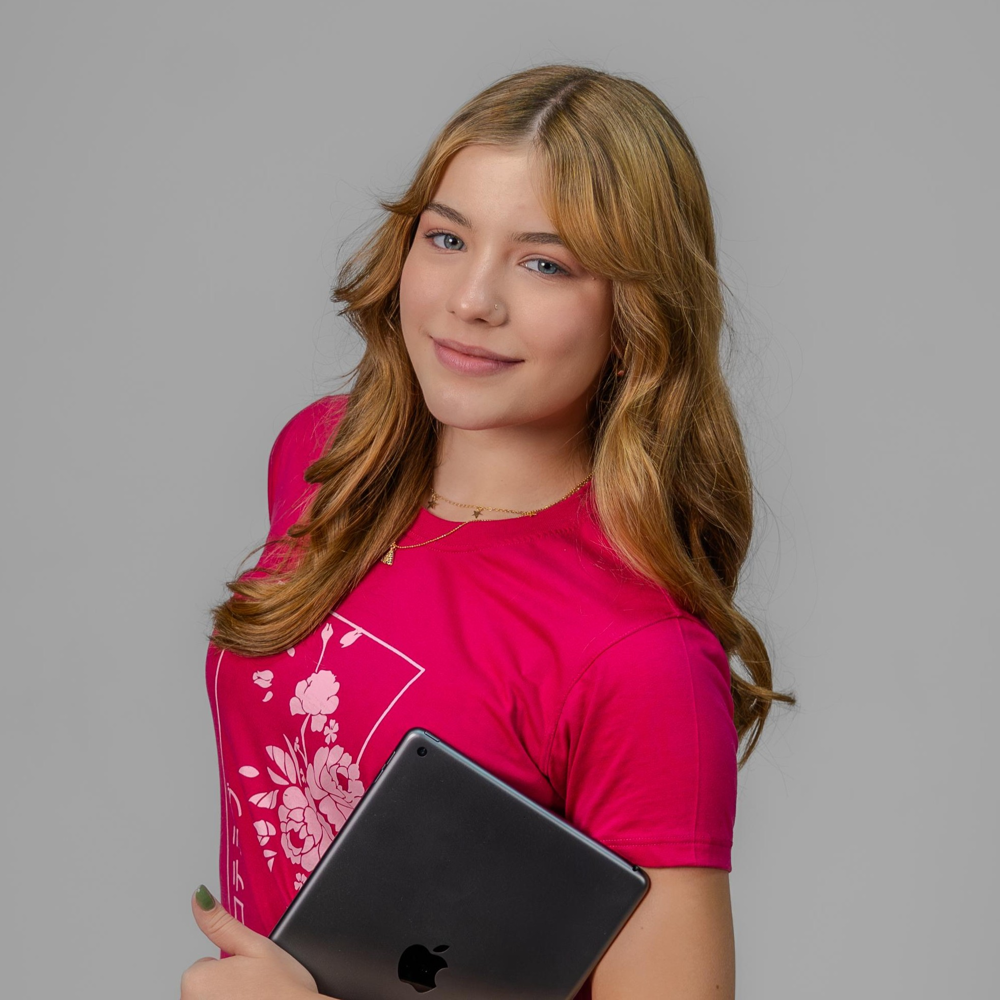
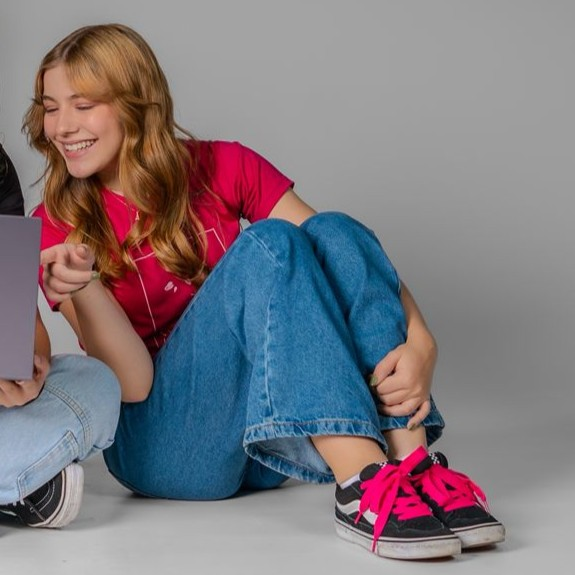

"Já que sou, o jeito é ser" - Clarice Lispector
Olá! Meu nome é Manuella Sofia Braga Zanola Souza, tenho 17 anos e sou estudante do curso técnico em Informática no Colégio e Faculdade Cotemig (unidade Barroca).
Tenho grande interesse nas áreas de informática e design UI/UX, buscando sempre aprender mais sobre experiência do usuário e interfaces intuitivas. Meu objetivo é aplicar meus conhecimentos, aprimorar minhas habilidades e contribuir com soluções criativas e proativas.
Atualmente, estou no 3º ano do curso técnico, com previsão de conclusão em dezembro de 2026, e sigo dedicada a expandir meu conhecimento em tecnologia, design e inovação.

Área voltada para criar interfaces agradáveis e fáceis de usar. O interesse em UI/UX mostra dedicação em unir tecnologia e design para melhorar a experiência do usuário.
Domínio da sintaxe simples e intuitiva do Python, destacando sua alta legibilidade, produtividade no desenvolvimento e facilidade de aprendizado em comparação a outras linguagens.
Fundamental para a produção de documentos, planilhas e apresentações. É uma base importante para organização de dados e comunicação de ideias.
Essencial no setor de tecnologia, já que a maioria da documentação, cursos e softwares estão nesse idioma. Amplia as oportunidades de aprendizado e atuação global.
Primeiros passos na lógica de programação com C#, incluindo estruturas de matriz, repetição e vetores. Excelente base para desenvolvimento futuro em aplicações desktop, web e jogos.
Conhecimento básico em HTML e CSS, com noções de estruturação de páginas, responsividade e estilização. Interesse em aprofundar em design de interfaces e boas práticas de usabilidade.
Portfólio desenvolvido por mim utilizando HTML, CSS e JavaScript, com interface prototipada no Figma e design responsivo. O site também conta com alternância entre modo claro e modo escuro, permitindo ao usuário escolher a melhor experiência visual durante a navegação.
Projeto desenvolvido com HTML e CSS para reproduzir o layout de um site existente, aplicando boas práticas de estrutura semântica, responsividade e organização visual.